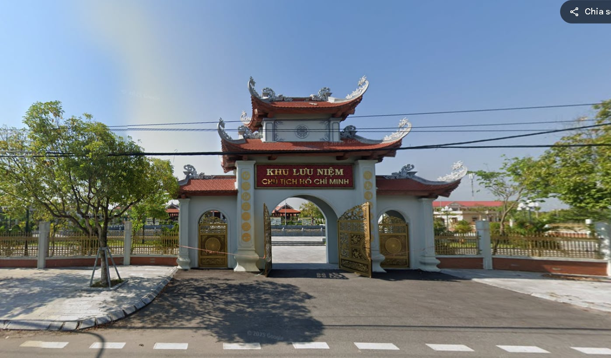

Đền thờ Bác Hồ nằm ở trung tâm xã Nam Cường, cách Thành phố Thái Bình khoảng 35 km. Đền thờ Bác được xây dựng tại Nam Cường có ý nghĩa rất quan trọng. Không chỉ là điểm tham quan, tưởng niệm mà còn là nơi sinh hoạt, giáo dục truyền thống quê hương, truyền thống yêu nước cho các tầng lớp nhân dân, đặc biệt là thế hệ trẻ.

Không gian trước đền
Đền thờ Bác nằm trong khuôn viên khu tưởng niệm Người, tổng diện tích 1,5 ha, quy hoạch bốn mặt đường và mặt chính là hồ rộng. Ngoài đền thờ còn có các công trình: Nhà khách, Nhà truyền thống; vườn cây Bác Hồ, đường nội bộ.
🎥 Video giới thiệu
Không gian trong đền
Đền thờ Bác Hồ được xây dựng theo kiến trúc truyền thống dân tộc, trong đó, nhiều hiện vật, hình ảnh, tài liệu giúp du khách hiểu được một cách khái quát về cuộc đời hoạt động của Bác.